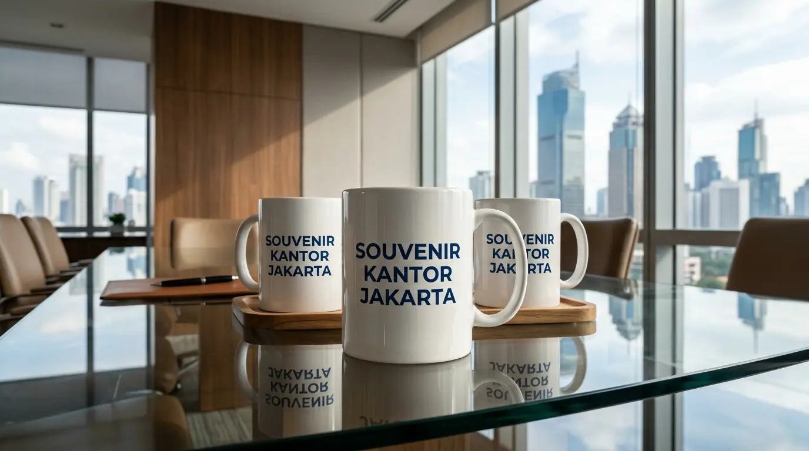

Mug Custom Perusahaan: Souvenir Kantor dengan Logo Brand
 Tim Redaksi Souvenir Kantor Jakarta
28 Agustus 2026
8 Menit Baca
Tim Redaksi Souvenir Kantor Jakarta
28 Agustus 2026
8 Menit Baca
Pengadaan mug kustom menjadi media branding harian yang sangat efektif karena diletakkan di area kerja. Penggunaan teknik cetak decal pembakaran oven suhu tinggi memastikan logo instansi bertahan permanen dan tidak terkelupas. Pemesanan skema grosir menekan alokasi biaya operasional hingga 35% dibandingkan pengadaan eceran. Sentralisasi pemesanan di Jakarta menjamin kepastian mutu bahan keramik, ketepatan warna, dan keamanan pengiriman.
Mug custom perusahaan adalah cenderamata gelas keramik kustom berlogo brand yang fungsional untuk memperkuat identitas visual, apresiasi karyawan, dan corporate gift.
- Mengapa Mug Custom Perusahaan Sangat Efektif untuk Branding dan Apresiasi Karyawan?
- Jenis Material dan Varian Model Mug Custom Perusahaan Apa Saja yang Populer?
- Teknik Cetak Logo Mana yang Paling Tahan Lama untuk Mug Custom Perusahaan?
- Kesalahan Apa Saja yang Harus Dihindari Saat Memesan Mug Custom Perusahaan?
- Pertanyaan Umum Seputar Mug Custom Perusahaan (FAQ)
- Kesimpulan Praktis
Mengapa Mug Custom Perusahaan Sangat Efektif untuk Branding dan Apresiasi Karyawan?
Mug custom perusahaan sangat efektif untuk branding dan apresiasi karyawan karena memberikan fungsi praktis sehari-hari, eksposur logo berulang, serta ikatan emosional positif.
Berdasarkan Laporan Tahunan Industri Merchandise Corporate Indonesia 2025/2026, penggunaan barang cenderamata keramik memiliki tingkat keterpakaian harian (daily engagement rate) hingga 84% di lingkungan kerja. Angka ini membuktikan bahwa cenderamata fungsional memberikan dampak eksposur merek (brand exposure) yang jauh lebih tinggi dibandingkan media promosi cetak sekali pakai. Setiap kali karyawan atau mitra menikmati kopi harian, logo instansi Anda akan terus terlihat secara konsisten.
Visibilitas Konsisten
Logo terpajang setiap hari di meja kerjaRetensi Ikatan
Brand recall meningkat 86%Efisiensi Anggaran
Biaya satuan sangat kompetitifBerikut adalah keunggulan utama memilih produk ini untuk kebutuhan instansi Anda:
- Visibilitas Merek yang Konsisten: Terpajang secara permanen di meja kerja ruang kantor maupun area Rapat Koordinasi, menjaga brand recall tetap tinggi.
- Meningkatkan Retensi Hubungan Bisnis: Menurut data Asosiasi Industri Merchandise Indonesia (AIMI) periode 2025/2026, pemberian cenderamata meja kerja mampu meningkatkan retensi ikatan mitra hingga 86% dalam jangka panjang.
- Efisiensi Alokasi Anggaran: Biaya satuan yang sangat kompetitif membuat pengadaan cenderamata massal menjadi sangat hemat.

Jenis Material dan Varian Model Mug Custom Perusahaan Apa Saja yang Populer?
Jenis material dan varian model mug custom perusahaan yang populer mencakup keramik porselen putih, keramik two-tone, stoneware bergaya klasik, dan mug stainless steel.
Memilih jenis produk yang tepat sangat menentukan impresi awal saat barang diserahkan kepada penerima. Setiap bahan memiliki karakteristik visual tersendiri yang siap disesuaikan dengan konsep acara instansi Anda:
Keramik Porselen
Putih mulus, area cetak luas, ideal untuk logo full color.
Two-Tone
Kombinasi warna interior kontras dengan eksterior.
Stainless Steel
Travel mug tahan panas, ideal untuk mobilitas tinggi.
- Mug Keramik Porselen Standar (White Mug): Varian klasik berbahan keramik putih mulus yang sangat populer. Memiliki area permukaan bidang cetak yang luas sehingga sangat fleksibel untuk kustomisasi logo full color.
- Mug Keramik Two-Tone (Interior Warna): Menampilkan perpaduan warna interior gelas yang kontras dengan dinding luar. Kombinasi ini sangat ideal untuk mencocokkan skema warna identitas visual (corporate colors) instansi Anda.
- Mug Stainless Steel Insulasi (Travel Mug): Dibuat dari bahan logam tahan karat yang dilengkapi penutup rapat. Sangat disukai oleh para pekerja yang memiliki mobilitas tinggi di luar area kantor.
Untuk melengkapi kebutuhan merchandise acara kantor Anda secara menyeluruh, simak juga panduan pilihan mug souvenir kantor fungsional yang dapat dipadukan secara serasi.
Teknik Cetak Logo Mana yang Paling Tahan Lama untuk Mug Custom Perusahaan?
Teknik cetak logo yang paling tahan lama untuk mug custom perusahaan adalah sablon decal pembakaran oven suhu tinggi (firing decall).
Kualitas pencetakan logo pada media keramik memegang peranan penting dalam menjaga citra profesionalitas instansi Anda. Kerapian cetakan yang tahan goresan mencegah logo pudar saat dicuci berulang kali.
Decal Firing
Dibakar suhu 700°C, menyatu dengan glazuur, abadi.
Digital Print
Sublimation coating, efisien untuk gradasi warna.
Screen Print
Ekonomis untuk logo solid dalam jumlah besar.
- Sablon Decal Pembakaran (Firing Decall): Logo ditempelkan menggunakan kertas decal lalu dibakar dalam oven oven industri di atas suhu 700 derajat Celsius. Pigmen warna menyatu dengan glazuur keramik secara permanen.
- Digital Print Sublimation: Proses transfer gambar menggunakan tinta khusus bertekanan panas pada permukaan ber-coating. Sangat cepat dan cocok untuk cetakan bergradasi kompleks.
Apabila Anda berencana mengadakan agenda pelatihan atau simposium instansi, dapatkan referensi mug promosi perusahaan custom logo yang siap dipesan dalam jumlah grosir.
Kesalahan Apa Saja yang Harus Dihindari Saat Memesan Mug Custom Perusahaan?
Kesalahan yang harus dihindari saat memesan mug custom perusahaan adalah menyetujui produksi massal tanpa cek sampel fisik, mengabaikan sekatan dus kemasan, dan memesan terlalu mendadak.
Tanpa Sampel
Berisiko ketidaksesuaian warna logo
Kemasan Tipis
Risiko pecah saat pengiriman logistik
Pesanan Mendadak
Waktu produksi tidak cukup untuk coating
Pengadaan barang berbahan keramik membutuhkan penanganan yang teliti agar tidak terjadi kerugian di kemudian hari:
- Tanpa Pengecekan Sampel Fisik (Physical Proofing): Memulai cetak massal tanpa memeriksa sampel fisik berisiko menyebabkan ketidaksesuaian warna atau posisi logo.
- Mengabaikan Proteksi Packaging: Membiarkan gelas keramik dikemas tanpa sekat kaku berisiko pecah saat proses pengiriman kargo.
- Perhitungan Waktu yang Terlalu Sempit: Proses kustomisasi dan pengeringan lapisan keramik memerlukan durasi yang ideal demi hasil pengerjaan yang rapi.
Seluruh risiko pengerjaan tersebut dapat dihindari dengan menyerahkan kebutuhan souvenir Anda kepada penyedia tepercaya Souvenir Kantor Jakarta yang memberikan jaminan garansi penggantian barang dan ketepatan waktu pengiriman.
Pertanyaan Umum Seputar Mug Custom Perusahaan (FAQ)
Butuh Mug Custom Perusahaan untuk Branding?
Konsultasikan kebutuhan mug custom perusahaan untuk branding dan acara instansi Anda dengan tim kami untuk mendapatkan rekomendasi produk dan penawaran terbaik.
Konsultasi SekarangKesimpulan Praktis
Mug custom perusahaan merupakan solusi cenderamata yang sangat efektif untuk memperkuat identitas merek sekaligus memberikan apresiasi nyata bagi karyawan dan relasi bisnis. Dengan memilih jenis keramik berkualitas, teknik cetak yang awet, serta kemasan yang rapi, impresi instansi Anda akan terjaga secara profesional. Konsultasikan kebutuhan cenderamata kantor Anda dan pesan secara langsung melalui Souvenir Kantor Jakarta untuk penawaran grosir terbaik hari ini.